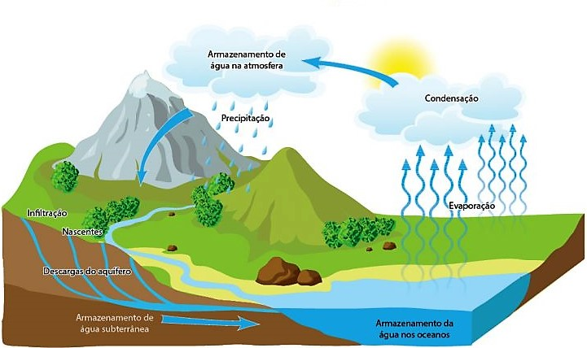
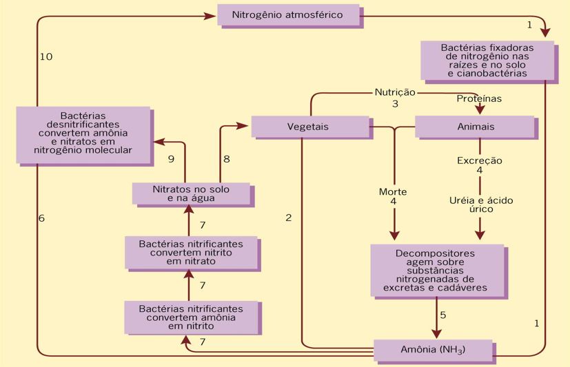

Os ciclos biogeoquímicos resultam da circulação de elementos químicos entre os seres vivos e o meio abiótico do planeta construído pela atmosfera, hidrosfera e litosfera. Um clico biogeoquímico ocorre uma vez que os átomos dos diversos elementos químicos que faziam parte dos seres vivos voltam ao ambiente não vivo. O processo de reciclagem dos átomos na natureza é realizado principalmente por certos fungos e bactérias decompositores.
Se não houvesse o reaproveitamento da matéria dos cadáveres, logo os átomos de alguns dos elementos químicos fundamentais para constituição de novos seres vivos se tornariam escassos e a vida se extinguiria. Para a ecologia, o fator mais importante de um ciclo biogeoquímicos é o fato de que os componentes bióticos e abióticos aparecem intimamente entrelaçados.
A água está em constante mudança de estado físico e há permanente troca dessa substância entre rios, lagos, mares, solos, atmosfera e seres vivos.
A água presente sob forma líquida na superfície da Terra sofre evaporação e passa para a atmosfera. Com o resfriamento nas camadas mais altas da atmosfera, os vapores de água condensam-se, formam nuvens e depois voltam aos continentes e mares sob a forma de chuva, neve ou granizo. Nos continentes, parte dessa água vai para rios e lagos, parte penetra através das camadas permeáveis do solo e se acumula em reservatórios subterrâneos (lençóis freáticos).
Os seres vivos absorvem ou ingerem água, pois ela é fundamental para sua sobrevivência. As plantas liberam grande parte da água que absorvem, principalmente pela transpiração, processo importante não só para resfriar o corpo da planta, como também para a condução da seiva bruta até as folhas. Os animais, por sua vez, liberam parte da água que absorvem ou ingerem por meio da transpiração, da excreção e das fezes. Em certos casos, ao exalarem o ar dos pulmões, também liberam vapor d’água.

O Ciclo do Carbono inicia-se com a fixação desse elemento pelos seres autótrofos, principalmente por meio da fotossíntese. Nesse processo, o carbono das moléculas de CO² do meio usado para a síntese de moléculas orgânicas que ficam disponível para os produtores e, através da cadeia alimentar, para os consumidores e decompositores. O CO² retorna para o meio ambiente pelos diferentes processos de degradação de matéria orgânica e pela queima de combustíveis fósseis, representados pelo carvão mineral e derivados de petróleo, como gasolina e óleo diesel.
O² é um gás liberado por meio da fotossíntese, sendo utilizado para a respiração de plantas, animais e outros organismos aeróbios (seres humanos, por exemplo). Os organismos fotossintetizantes inspiram gás carbônico e expiram, devolvendo o ar para a atmosfera na forma de gás oxigênio. A manutenção das taxas de CO² e O² no ambiente depende diretamente dos processos de fotossíntese e respiração. Praticamente todo o oxigênio livre da atmosfera e hidrosfera tem origem no processo de fotossíntese.
O O² produzido pode participar também da formação da camada de ozônio (O³) da atmosfera que exerce o papel de filtro das radiações ultravioleta. Essa camada vem sendo progressivamente destruída, principalmente pela ação de gases clorofluorcarbonos, como os que são encontrados em espuma plástica, na indústria de eletrônicos e em aerossóis.
O nitrogênio é um dos elementos de caráter fundamental na composição dos sistemas vivos. Ele está envolvido com a coordenação e controle das atividades metabólicas. Entretanto, apesar de 78% da atmosfera ser constituída de nitrogênio, a grande maioria dos organismos é incapaz de utilizá-lo, pois este se encontra na forma gasosa (N²) que é muito estável possuindo pouca tendência a reagir com outros elementos.
Os consumidores conseguem o nitrogênio de forma direta ou indireta através dos produtores. Eles aproveitam o nitrogênio que se encontra na forma de aminoácidos. Produtores introduzem nitrogênio na cadeia alimentar, através do aproveitamento de formas inorgânicas encontradas no meio, principalmente nitratos (NO³) e amônia (NH³+).
O ciclo do nitrogênio pode ser dividido em algumas etapas: